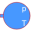
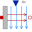

SimpleCoolingSimple cooling circuit |
|
Diagram
{kind=link}
Information
This information is part of the Modelica Standard Library maintained by the Modelica Association.
1st test example: SimpleCooling
A prescribed heat source dissipates its heat through a thermal conductor to a coolant flow. The coolant flow is taken from an ambient and driven by a pump with prescribed mass flow.Results:
| output | explanation | formula | actual steady-state value |
| dTSource | Source over Ambient | dtCoolant + dtToPipe | 20 K |
| dTtoPipe | Source over Coolant | Losses / ThermalConductor.G | 10 K |
| dTCoolant | Coolant's temperature increase | Losses * cp * massFlow | 10 K |
Parameters (2)
| medium |
Value: Modelica.Thermal.FluidHeatFlow.Media.Medium() Type: Medium Description: Cooling medium |
|---|---|
| TAmb |
Value: 293.15 Type: Temperature (K) Description: Ambient temperature |
Outputs (3)
| dTSource |
Default Value: prescribedHeatFlow.port.T - TAmb Type: TemperatureDifference (K) Description: Source over Ambient |
|---|---|
| dTtoPipe |
Default Value: prescribedHeatFlow.port.T - pipe.T_q Type: TemperatureDifference (K) Description: Source over Coolant |
| dTCoolant |
Default Value: pipe.dT Type: TemperatureDifference (K) Description: Coolant's temperature increase |
Components (11)
| medium |
Type: Medium Description: Cooling medium |
|
|---|---|---|
|  | ambient1 |
Type: Ambient |
| pump |
Type: VolumeFlow |
|
| pipe |
Type: Pipe |
|
| ambient2 |
Type: Ambient |
|
| heatCapacitor |
Type: HeatCapacitor |
|
| prescribedHeatFlow |
Type: PrescribedHeatFlow |
|
| volumeFlow |
Type: Constant |
|
| heatFlow |
Type: Constant |
|
|  | convection |
Type: Convection |
| thermalConductance |
Type: Constant |